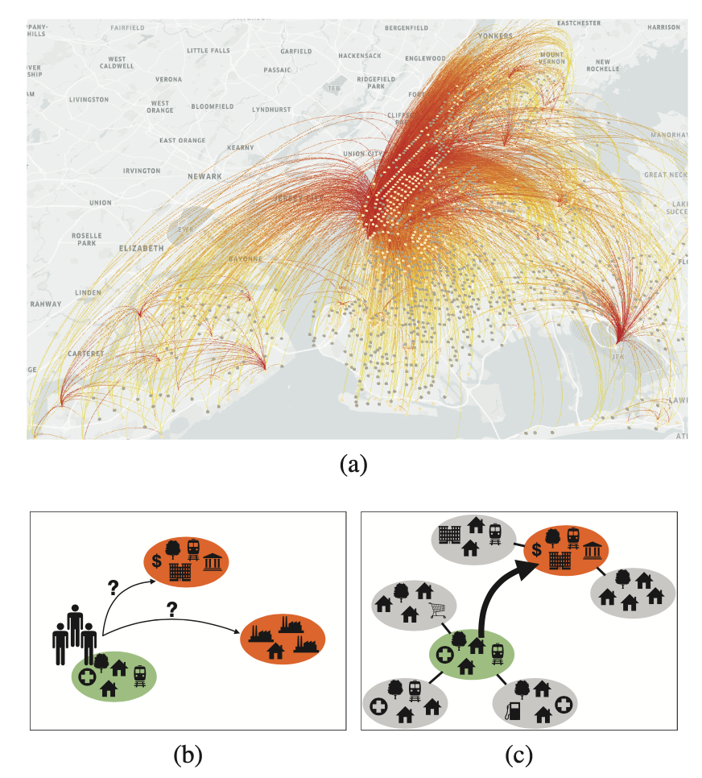
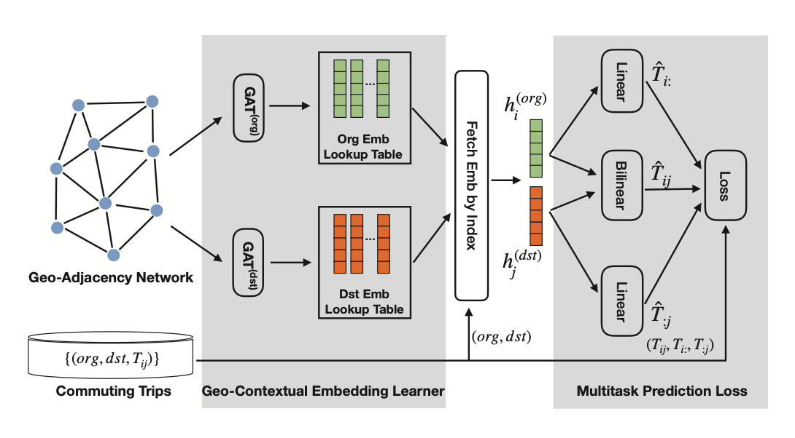
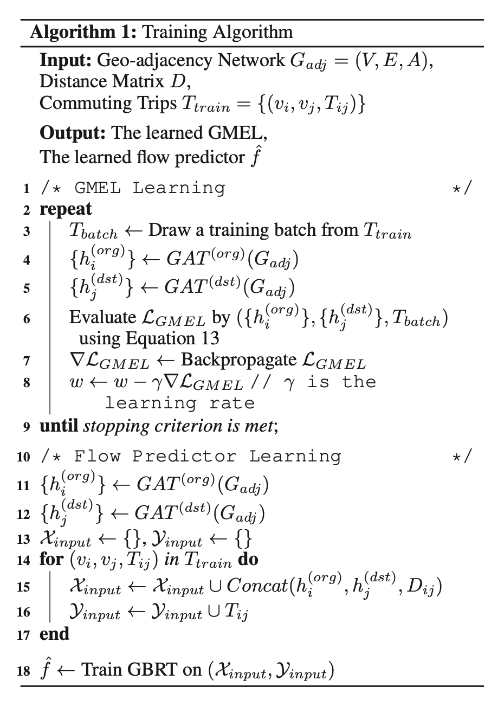
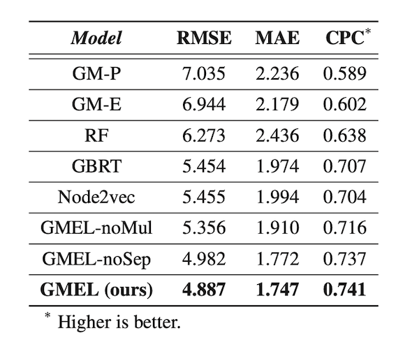
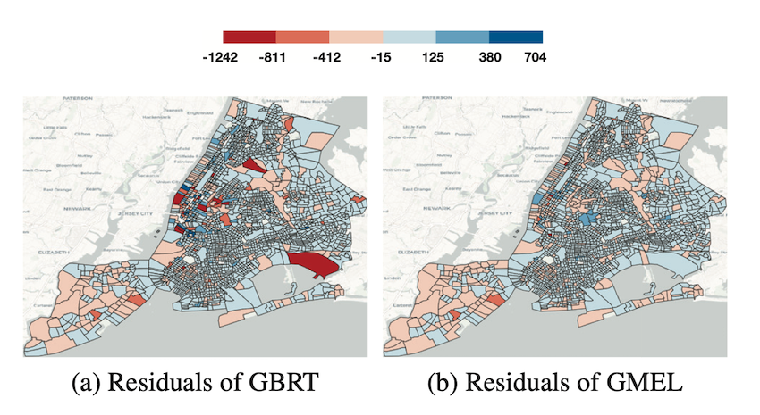

Predicting commuting flows based on infrastructure and land-use information is critical for urban planning and public policy development. However, it is a challenging task given the complex patterns of commuting flows. Conventional models, such as gravity model, are mainly derived from physics principles and limited by their predictive power in real-world scenarios where many factors need to be considered. Meanwhile, most existing machine learning-based methods ignore the spatial correlations and fail to model the influence of nearby regions. To address these issues, we propose Geo-contextual Multitask Embedding Learner (GMEL), a model that captures the spatial correlations from geographic contex- tual information for commuting flow prediction. Specifically, we first construct a geo-adjacency network containing the ge- ographic contextual information. Then, an attention mechanism is proposed based on the framework of graph attention network (GAT) to capture the spatial correlations and encode geographic contextual information to embedding space. Two separate GATs are used to model supply and demand characteristics. To enhance the effectiveness of the embedding representation, a multitask learning framework is used to intro- duce stronger restrictions, forcing the embeddings to encapsulate effective representation for flow prediction. Finally, a gradient boosting machine is trained based on the learned embeddings to predict commuting flows. We evaluate our model using real-world dataset from New York City and the experimental results demonstrate the effectiveness of our proposed method against the state of the art.
本文章题为“用于通勤流预测的地理上下文嵌入学习”。
关键几个问题：
通勤是一种从家到工作地的往返过程。日复一日的通勤行为形成了一个与社会经济因素密切关联的复杂网络。
通勤流也被看作城市规划中的一个基本问题，因为其揭示了城市中劳动力供给与需求之间的空间关系。所以从城市规划的角度来看，有必要研究基础设施和土地利用对通勤流的影响。

说的通勤流预测可能又容易联想到交通流预测，两者有什么区别呢？
交通流预测是一个时序预测问题，在技术实现上需要将历史轨迹信息作为输入特征；而通勤流预测旨在揭示城市中劳动力供给侧与需求侧之间的空间关系，通常是只用节点属性信息（基建、土地利用）预测的是边级别的信号（如通勤流的大小）。
针对通勤流预测问题，人们以前有用重力模型、非参数模型、介入机会模型。
然而：
(1) 重力模型只是简单地将物理定律搬过来，实际上不能很好地刻画复杂的通勤模式，应用效果不理想。
(2) 现有的大多数机器学习模型只用OD点的节点属性特征，忽略了区域之间的空间依赖性
介入机会模型倒是考虑了出发地、目的地周边对中心的影响，本文提出的地理上下文嵌入便受到这类方法的启发。
图表征学习方面也有很多利用节点属性、节点邻域信息的方法，本文方法主要受GAT的影响，将自注意力机制引入到通勤流预测上，捕获地理上下文信息。
至此本文方法的基本框架已经出来了。

这里要注意的是文章提出用2个GAT分别建模出发地和目的地的特征，即要把劳动供给侧和需求侧的特征进行解耦。
然后通过多任务学习框架约束嵌入向量更适应于流预测表示。
主任务自然是通勤流预测，子任务是预测两个地理单元（出发地和目的地）的流入/流出量，这背后的直觉是通勤流与地理单元的流入/流出量之间高度相关，引入这两个子任务可以约束嵌入向量包含更多有助于通勤流预测的信息（监督信号）。
前面基于GMEL可以获得地理单元的嵌入向量，基于这些向量在训练一个回归学习器（如梯度提升树、随机森林）便能进行通勤流预测。算法如下：

实验部分需要验证的点包括：
观察实验结果可发现：

参数敏感性分析 、残差分析也表明方法的鲁棒性。

总结全文，文章提出利用地理上下文信息预测通勤流，并提出一个嵌入学习框架来学习地理单元的上下文信息，结果表明引入这种信息是有助于通勤流预测的。